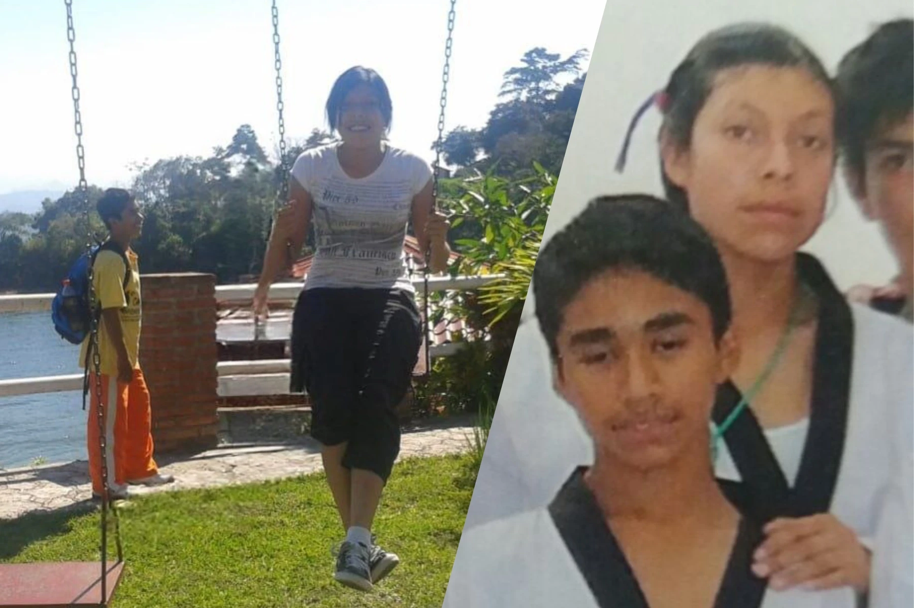
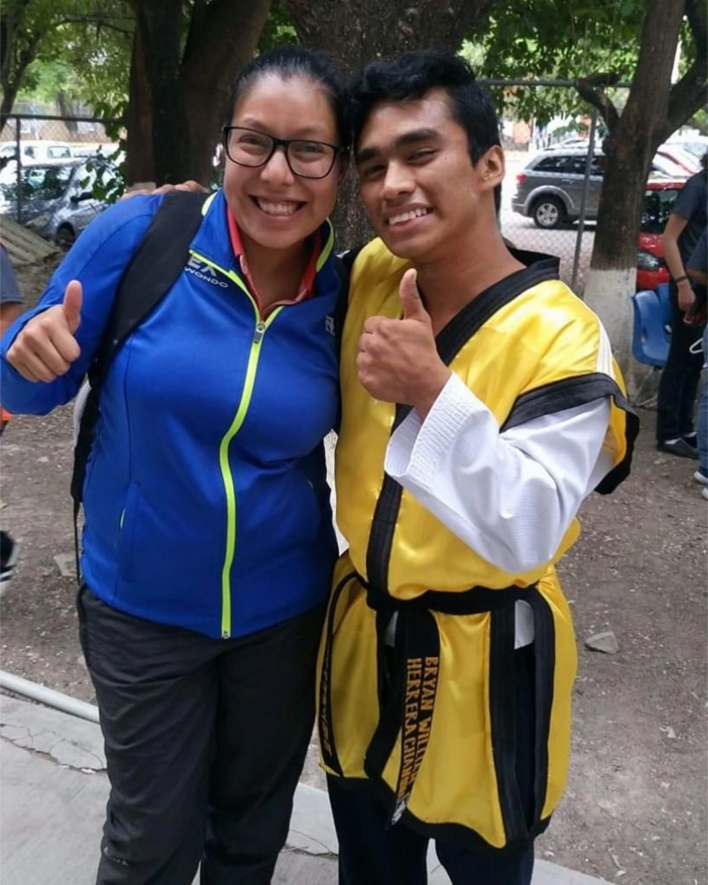
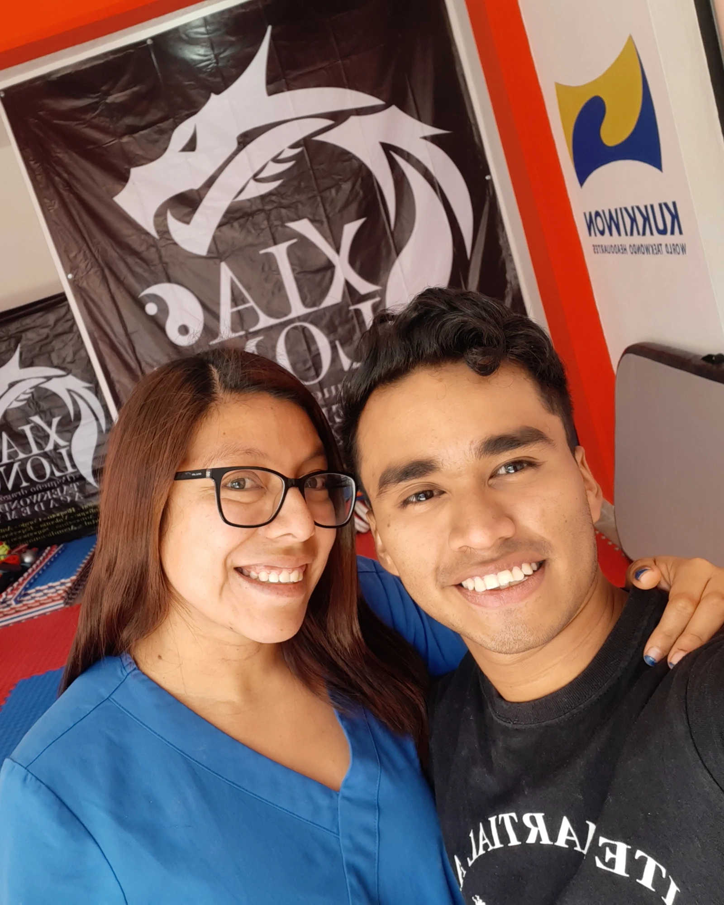
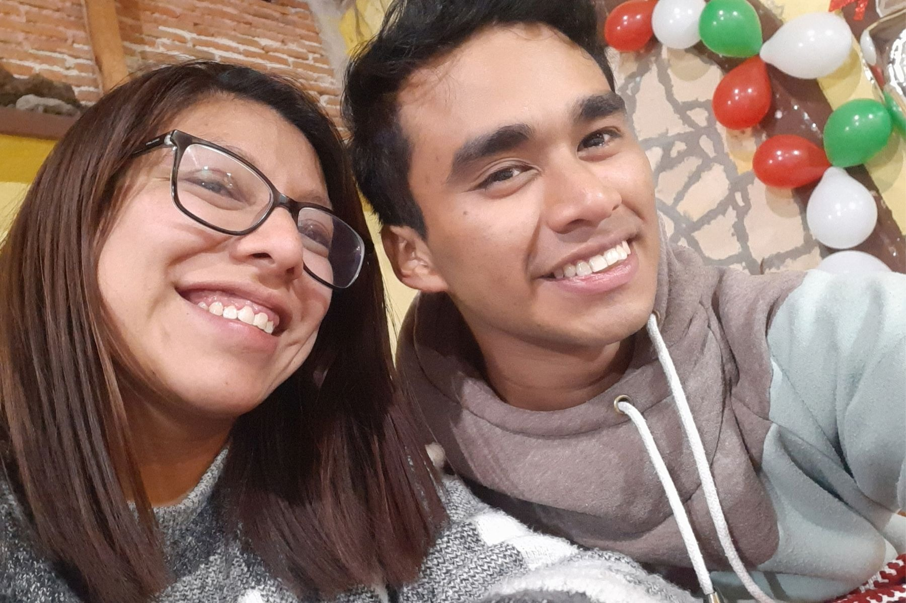
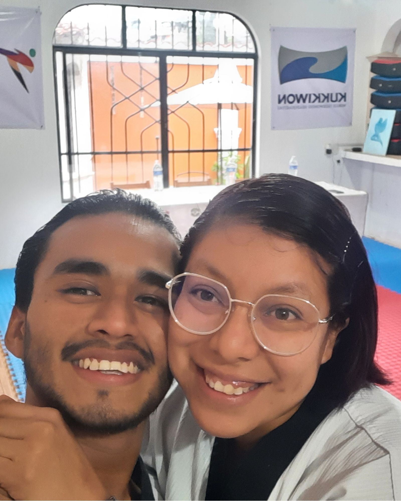
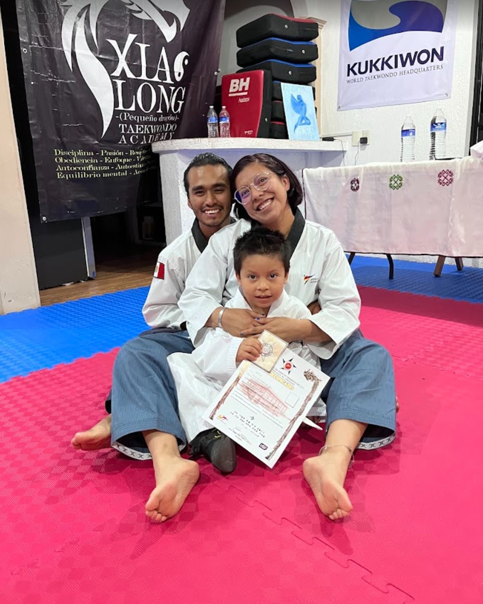
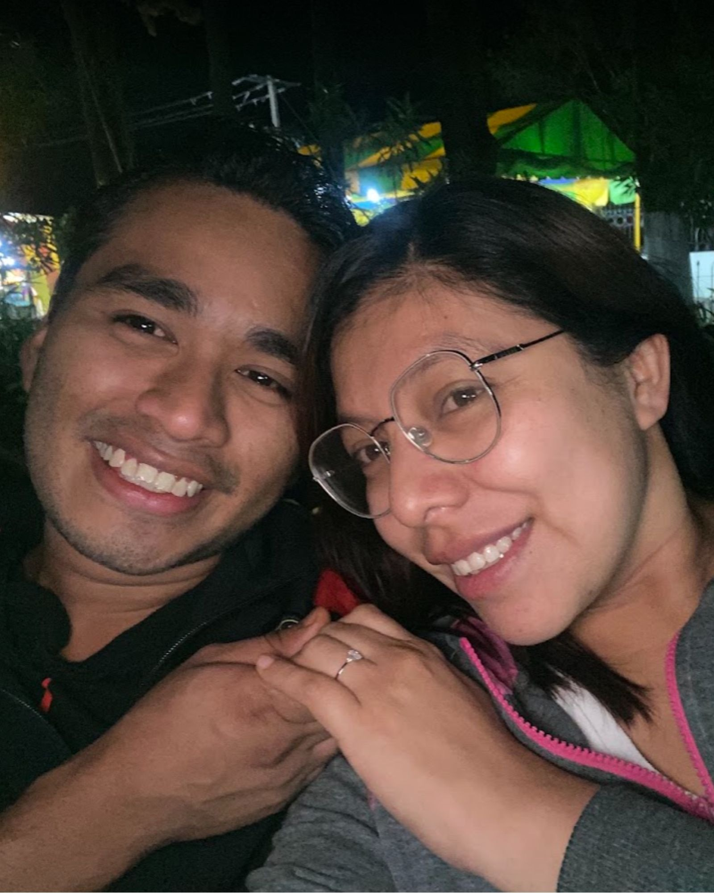
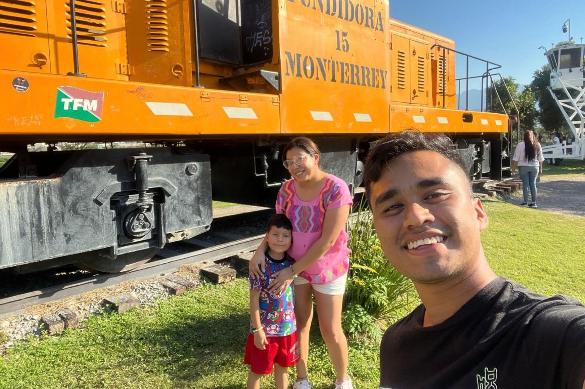
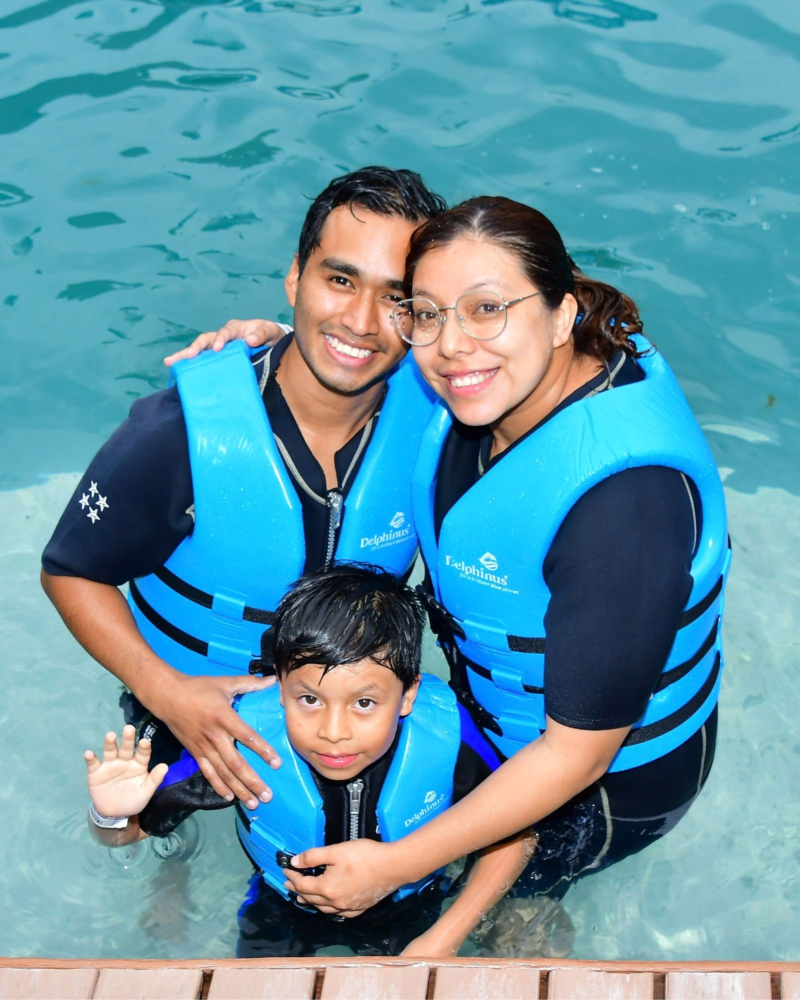

“Ponme como un sello sobre tu corazón, como un sello sobre tu brazo, porque el amor es tan fuerte como la muerte, y la devoción total, tan exigente como la tumba.”
Dos caminos que coincidieron muchas veces hasta convertirse en uno.

Donde todo comenzó sin que lo supiéramos
Nos conocimos representando a Chiapas en Poomsae, durante un viaje a Campeche. Éramos dos personas tímidas, con nuestros propios amigos y nuestros propios sueños. Apenas cruzábamos algunas palabras, pero sin saberlo, nuestras historias ya habían empezado a coincidir.

El reencuentro
Años después volvimos a encontrarnos. Vivi fue a saludarme después de una presentación y nos tomamos una foto juntos. No hubo promesas ni grandes declaraciones, solo risas, alegría por volver a vernos y una pequeña sensación de que aquel encuentro había sido diferente.
Después, nuestros caminos volvieron a separarse… por un tiempo.

La vida volvió a cruzarnos
Una lesión terminó convirtiéndose en una de las coincidencias más importantes de nuestra historia. Recordé que Vivi era fisioterapeuta y decidí escribirle buscando ayuda.
Lo que comenzó como una cita profesional se transformó en largas conversaciones, confianza y horas juntos. Poco a poco, dejamos de ser dos personas que se conocían desde hacía años para empezar a descubrirnos de verdad.

Nuestro pequeño secreto
Ese día decidimos estar juntos. Durante un tiempo, nuestra relación fue solamente nuestra. Entre fotografías, mensajes, risas y momentos que todavía no compartíamos con los demás, comenzó una etapa que guardamos con especial cariño.

Elegirnos
Poco a poco dejamos de esconder lo que ya era evidente para nosotros: queríamos construir algo juntos.
Ya no eran solo conversaciones interminables, chocolates, cafés o encuentros inesperados. Éramos una pareja aprendiendo a conocerse, a confiar y a elegir quedarse.

Y nuestra historia se convirtió en familia
Nuestra historia nunca fue solamente de dos. Einar llegó a ocupar un lugar esencial en todo lo que estábamos construyendo. Poco a poco dejamos de ser una pareja para empezar a sentirnos como una familia.
Un día, casi sin pensarlo, Einar dijo: “adiós, papá”. Y algo cambió para siempre.

Un sí para el futuro
Antes de comenzar una nueva etapa lejos de Chiapas, llegó una de las decisiones más importantes de nuestra historia. Bryan le pidió matrimonio a Viviana.
No sabíamos exactamente dónde nos llevaría la vida, qué ciudades conoceríamos ni cuántos nuevos comienzos tendríamos por delante. Pero sí sabíamos algo: queríamos vivirlos juntos.

Aprender a empezar de nuevo
Nos mudamos buscando nuevas oportunidades y una vida mejor para nuestra familia. Nuevo León nos puso a prueba, pero también nos regaló recuerdos que seguimos guardando: paseos, lugares especiales, nuevas personas, sueños compartidos y momentos en los que simplemente nos sentábamos a preguntarnos qué queríamos construir juntos.
No todo salió como imaginábamos, pero incluso esa etapa terminó formando parte de quienes somos hoy.

Nuestro presente
Después de regresar a Chiapas atravesamos una de las etapas más difíciles de nuestra historia. Hubo una cirugía, incertidumbre, nuevos proyectos y muchas decisiones. Entonces apareció Cancún.
Primero llegó Bryan y, tiempo después, volvimos a estar juntos los tres. Hoy esta ciudad representa otro comienzo: nuestra familia reunida, nuevos sueños y la oportunidad de seguir construyendo la vida que tantas veces imaginamos.
Y ahora, nuestro siguiente capítulo tiene fecha: 17 de noviembre de 2026.
Acompáñanos
Nuestro día
01
Ceremonia
10:00 AM
17 de noviembre de 2026 Registro Civil · Oficialía 01 y Oficialía 02 Cancún, Quintana Roo